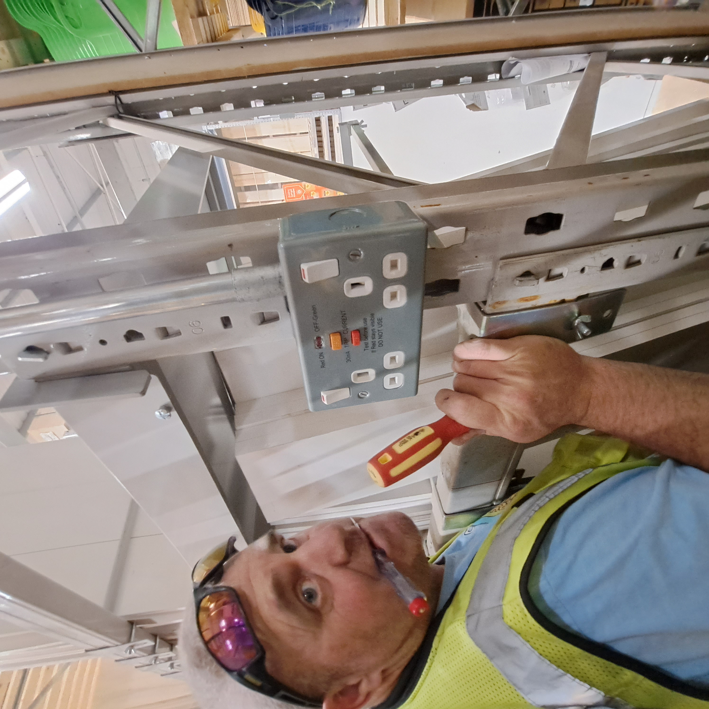
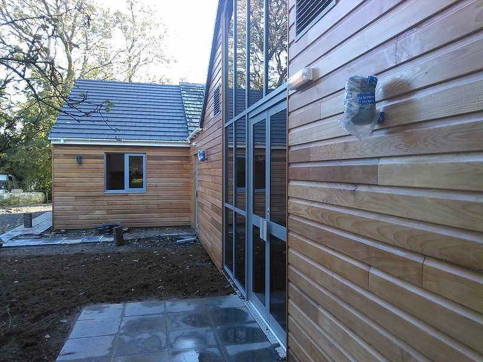
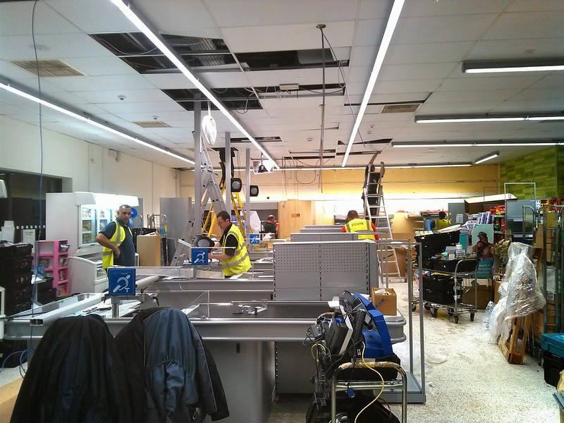
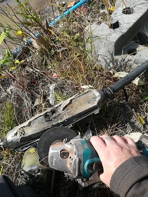

Commercial · Retail · Industrial
Electrical
Electrical installations and specialist systems from the supplied archive.
Project photography








Electrical installations and specialist systems from the supplied archive.



